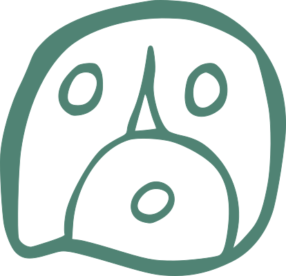
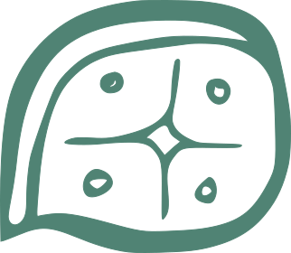

Notes enregistrées
Chargement...

Le tzolk’in, également appelé “compte des jours” ou “calendrier sacré”, est l’un des calendriers de la civilisation maya. Originaire de la Mésoamérique, ce système calendaire a été développé il y a plus de 2 500 ans. Son utilisation s’est poursuivie sans interruption jusqu’à nos jours dans certaines communautés mayas du Guatemala et du Mexique.
Contrairement à notre calendrier grégorien, qui suit les cycles solaires, le tzolk’in repose sur un cycle de 260 jours, résultant de la combinaison de deux cycles simultanés : un cycle de 13 nombres et un cycle de 20 glyphes (appelés “nawals”). Chaque jour est ainsi identifié par un nombre de 1 à 13 associé à l’un des 20 glyphes, créant 260 combinaisons uniques. Ce cycle correspond approximativement à la période de gestation humaine et est également lié aux cycles agricoles et astronomiques, centraux pour la civilisation maya.
Les Mayas possédaient une connaissance astronomique remarquablement précise, qui se reflète dans la structure du tzolk’in. Le cycle de 260 jours présente plusieurs corrélations astronomiques significatives : il correspond approximativement à neuf cycles lunaires synodiques (environ 29,5 jours chacun) ainsi qu’à la période de visibilité de Vénus. De plus, les observateurs mayas avaient noté que les passages du Soleil au zénith à la latitude de Copán (environ 14,8° Nord) se produisaient à 260 jours d’intervalle. Le cycle de 20 jours, lié au système vigésimal (base 20) des Mayas, reflète également le cycle des Pléiades, visible pendant environ 260 jours par an sous ces latitudes. Le cycle de 13, quant à lui, pourrait correspondre au nombre de “cieux” ou niveaux cosmiques dans la cosmologie maya. Les Mayas avaient calculé avec une précision stupéfiante les cycles synodiques des planètes visibles, les éclipses solaires et lunaires, et même la précession des équinoxes, un cycle d’environ 26 000 ans. Le tzolk’in s’intégrait dans un système calendaire plus vaste, incluant le Haab (calendrier solaire de 365 jours), pour former le “Compte Long”, permettant de suivre des périodes de plusieurs millénaires.
Fait remarquable, les nombres 13 et 20, au cœur du tzolk’in maya, se retrouvent avec une signification similaire dans d’autres traditions culturelles éloignées géographiquement. Dans la tradition celtique, le calendrier lunaire comportait 13 mois de 28 jours, correspondant aux 13 cycles lunaires d’une année solaire. Le nombre 20 apparaît dans leur système de comptage vigésimal, et certains cercles de pierres celtiques présentent des arrangements basés sur ces nombres. Le calendrier oghamique celtique, par exemple, possède 20 signes principaux, rappelant les 20 glyphes du tzolk’in. Chez les Égyptiens anciens, le cycle de Sirius (l’étoile la plus brillante du ciel) était particulièrement important, et sa période de visibilité était d’environ 260 jours par an. Leur calendrier présentait 13 phases correspondant aux inondations du Nil, et leur système numérique attribuait une signification particulière au nombre 20 comme marqueur d’une période complète. Dans la tradition hopi d’Amérique du Nord, on retrouve un système prophétique basé sur 13 cycles majeurs, et leur cosmologie divise le monde en 20 aspects fondamentaux. Cette convergence numérique entre cultures, apparemment sans contacts directs, soulève des questions fascinantes sur l’universalité potentielle de certaines observations astronomiques ou sur des intuitions mathématiques fondamentales communes à l’humanité.
Les 20 glyphes du tzolk’in représentent des forces ou énergies spirituelles fondamentales qui influencent chaque jour selon la cosmogonie maya. Chaque glyphe possède ses propres caractéristiques, son symbolisme et sa signification spirituelle. Ils sont représentés par des symboles visuels complexes qui évoquent des éléments naturels, des animaux ou des concepts abstraits : Imix (Crocodile), Ik (Vent), Akbal (Nuit), Kan (Maïs), Chicchan (Serpent), Cimi (Mort), Manik (Cerf), Lamat (Étoile), Muluc (Eau), Oc (Chien), Chuen (Singe), Eb (Herbe), Ben (Roseau), Ix (Jaguar), Men (Aigle), Cib (Vautour), Caban (Terre), Etznab (Silex), Cauac (Orage) et Ahau (Seigneur/Soleil). Ces glyphes déterminent la nature fondamentale de chaque jour et sont considérés comme des portails permettant de communiquer avec différentes dimensions de l’existence et des divinités spécifiques.
Dans le tzolk’in, les 13 nombres ne sont pas de simples indicateurs quantitatifs, mais possèdent une signification qualitative et spirituelle profonde. Chaque nombre de 1 à 13 représente une intention, un être ou une direction d’énergie particulière : le 1 symbolise l’unité et l’initiation, le 2 la dualité et la polarité, le 3 l’activation et le mouvement, le 4 la stabilité et la mesure, le 5 l’harmonie et le centre, le 6 l’équilibre et le rythme, le 7 la réflexion et la méditation, le 8 l’harmonie et la justice, le 9 la patience et la persévérance, le 10 la manifestation et l’accomplissement, le 11 la dissolution et la libération, le 12 la compréhension et la stabilité, et le 13 l’ascension et la transcendance. Selon la tradition maya, chaque nombre module l’énergie du glyphe auquel il est associé, créant une dynamique unique pour chaque jour du calendrier. Ces nombres sont également liés aux treize articulations majeures du corps humain, établissant une connexion entre le macrocosme et le microcosme.
Sur cette page, vous avez accès au couple glyphe/chiffre du jour et à la trécéna (cycle de 13 jours correspondant à la “semaine” spirituelle maya, avec une énergie particulière). Sous l’élément visuel du calendrier, une explication textuelle détaille le glyphe, le chiffre et la trécéna du jour.
Vous pouvez naviguer entre les jours avec les flèches « < » et «> » qui encadrent la date, situées sous les modules visuels du tzolk’in. En cliquant sur la date, vous pouvez entrer une date de votre choix et la valider avec la touche “Entrée”. Cela permet de consulter les signes associés à votre date de naissance ou à une date d’intérêt, tout en affichant les informations des chiffres et glyphes correspondants. En haut à droite, un bouton de réinitialisation ramène à la date du jour. Derrière le cadre affichant le chiffre et le glyphe du jour, se trouve le glyphe de la trécéna en cours.
Les éléments textuels sont accompagnés de flèches qui, au clic, ouvrent une nouvelle fenêtre appelée “Détails”, contenant des informations encore plus approfondies. Vous pouvez quitter cette fenêtre en cliquant sur le bouton “Retour” en haut à gauche, qui ramène à la fenêtre principale de l’application avec le calendrier.

C’est cette page.
À la première ouverture, il vous est demandé un code de quatre chiffres ou plus. Ce code n’est pas requis pour accéder aux modules “Notes” et “Enregistrés”, mais il permet de récupérer vos notes enregistrées en cas de mise à jour, de changement de téléphone, de désinstallation accidentelle de l’application, etc. Choisissez un code que vous retiendrez facilement pour ne jamais perdre vos écrits. C’est votre identifiant personnel, garantissant l’accès à votre dossier attaché à l’application.
La page “Notes” permet de consigner les événements marquants du jour. Un menu déroulant en haut propose les huit couleurs de la roue des émotions de Robert Plutchik pour associer une couleur/émotion à votre note. L’enregistrement des notes est automatique. À minuit, lors du changement de date, l’espace de note se vide, et le texte est enregistré dans le module “Enregistrés”.
Accessible via le bouton en haut à droite de la fenêtre “Notes”, la fenêtre “Enregistrés” affiche toutes vos notes mémorisées. Le module de recherche permet de filtrer vos notes par “glyphe”, “chiffre” ou “date grégorienne”. Vous pouvez télécharger vos données au format CSV pour les ouvrir dans un tableur. Le CSV contient les colonnes suivantes : Date, Glyphe, Chiffre, Glyphe+Chiffre, Couleur, Note.
Cette page présente les crédits, la version actuelle de l’application, les journaux de mise à jour et un lien vers le site du Parédé : leparede.org.
« Connais-toi toi-même et tu connaîtras l’Univers et les Dieux »


Calendrier Maya Sacré
Version 1.0.8
Auteur : Motokiyo Galaad Ferran
Assistance IA : Claude, Grok, DeepSeek
Notes
Vous souhaitez enregistrer un message pour le ?
Confirmer
Appuyez sur un champ pour le modifier
✅ CSV téléchargé
Voulez-vous supprimer les notes de l'application pour repartir sur un nouveau cycle ?
💾 Vos notes sont conservées dans le fichier CSV téléchargé.
🔄 Pour les retrouver, réimportez ce fichier via Uploader.
⚠️ Seul le CSV permet une restauration complète. TXT et PDF ne suffisent pas.
Tradition K'iche' classique · Bolontiku confirmé uniquement pour G9